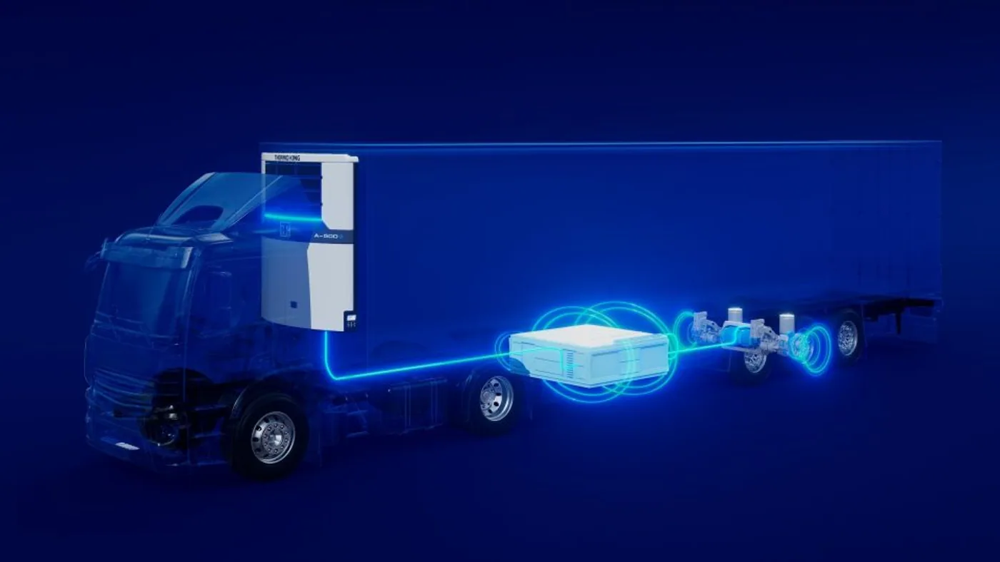

Thermo King anunció el 31 de agosto de 2026 qué llevará a IAA Transportation: ampliaciones de sus familias eléctricas E-Series y E-Volution, soluciones de recuperación de energía, baterías y servicios conectados. El mensaje central es que una flota puede electrificar la refrigeración sin reemplazar necesariamente el vehículo tractor por uno a batería.
La comunicación anticipa una exhibición, no una gama completa de especificaciones nuevas ni un lanzamiento argentino. IAA se realizará del 15 al 20 de septiembre en Hannover, según el calendario del organizador. Las condiciones de venta, instalación y soporte local deben confirmarse por separado.
Entre las tecnologías mencionadas aparece AxlePower, que ya existía antes de este anuncio. Por eso, la novedad no es su invención esta semana, sino su lugar en una propuesta que reúne equipos de frío, energía y servicio para distintas operaciones.
Dos necesidades energéticas en un mismo viaje
Análisis de Zabala Repuestos. Transportar una carga y conservar su temperatura son tareas relacionadas, pero distintas. Una empresa puede estudiar mejoras en el equipo frigorífico aunque mantenga su tractor actual. Eso permite analizar una transición por etapas, siempre que la configuración elegida sea compatible y esté respaldada por el proveedor.
La primera pregunta debería ser qué necesita la mercadería durante toda la jornada. Un viaje no termina cuando el camión deja de avanzar: puede haber esperas, preparación de pedidos y descarga. El sistema debe evaluarse con esos momentos incluidos, no solamente con las horas de circulación.
Cómo encaja la recuperación de energía
La documentación de AxlePower describe un conjunto instalado en el semirremolque: unidad frigorífica eléctrica, batería y eje generador. El sistema puede recuperar energía durante frenadas y descensos. También contempla un modo activo que obtiene energía mientras se circula y aumenta el esfuerzo requerido al tractor.
Esta distinción importa: no corresponde presentar toda la electricidad como gratuita ni prometer que cualquier recorrido producirá el mismo resultado. La propia descripción técnica diferencia los modos de trabajo. El balance debe calcularse sobre el conjunto y sobre una ruta representativa.

El recorrido define la comparación
Para un transportista argentino, una evaluación útil debería incluir kilómetros, tiempos detenido, frecuencia de aperturas y condiciones ambientales. Conviene entregar esa misma descripción a los proveedores consultados. De otro modo, cada propuesta puede estar calculada para una jornada diferente y resultar imposible de comparar.
También hay que definir qué ocurre cuando cambia el trabajo. Una unidad asignada hoy a un circuito regular podría necesitar cubrir otro recorrido mañana. La flexibilidad tiene valor, pero debe comprobarse con datos y con las instrucciones del sistema, no suponerse porque el vehículo tenga autonomía suficiente para moverse.
La prueba debe proteger primero la carga
Una prueba piloto necesita criterios acordados antes de comenzar: registros que se conservarán, responsables de revisarlos y procedimiento ante una alarma. El ahorro nunca debería evaluarse aislado de la capacidad para cumplir las condiciones de transporte requeridas por el cliente.
Conviene comparar jornadas equivalentes y documentar las diferencias inevitables. Una reducción observada durante una semana tranquila no demuestra por sí sola el mismo resultado durante la temporada de mayor actividad. Las conclusiones más útiles explican tanto el beneficio como sus límites.
Mantenimiento y respaldo antes de incorporar el equipo
La consulta comercial debe incluir quién instala, quién diagnostica y dónde se consiguen los componentes. Una flota necesita conocer el procedimiento de asistencia fuera de su base y qué alternativa tiene si el equipo queda inmovilizado con mercadería comprometida.
El personal también requiere formación específica. Un sistema de alta tensión no debe tratarse como una instalación eléctrica convencional. Las tareas permitidas al operador, las inspecciones del taller y los trabajos reservados a especialistas deben quedar claramente separados en la documentación entregada.
Preguntas para llevar al proveedor
- ¿Qué versión se ofrece y con qué configuración de vehículo es compatible?
- ¿Qué condiciones se utilizaron para estimar consumo y autonomía?
- ¿Cómo se abastece durante esperas prolongadas?
- ¿Qué mantenimiento y capacitación requiere?
- ¿Qué repuestos y asistencia existen en Argentina?
- ¿Cómo se comprobará el resultado del piloto?
La noticia abre una conversación interesante para el transporte refrigerado: mejorar una parte de la operación sin esperar a renovar toda la flota. El paso siguiente no es adoptar una promesa general, sino pedir una solución completa que pueda sostener temperatura, disponibilidad y servicio en el trabajo real.